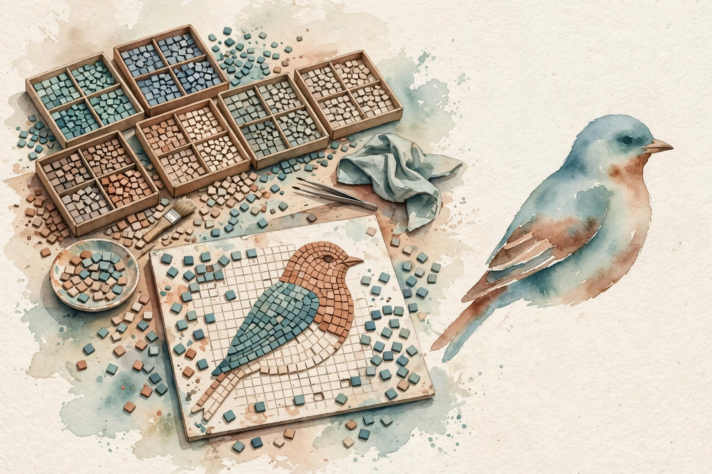

Unit 06 · Discrete latent modelling and VQ-VAE
A paintbox with four colors, a wall where gradients die, a useful lie that smuggles them through, and the price list in whole bits.
From the lesson The idea, and every number beside it, comes from the cited section of content/v2/math-genai/lessons/u06/lesson-06-vqvae-discrete-latents.md. The phrasing is the companion's. No lecture transcript exists for this unit.
Illustration Invented by the companion: an analogy, a toy with made-up values, or a what-if. Never lecture content.
companion The idea above the tag carries a lesson anchor. The generalization below it is the companion's own voice.
Narrated from the lesson content. The lesson is locally authored bridge material. It states that it does not reproduce the instructor lectures, and no transcript was inspected. All numbers below were computed in the lesson on 2026-10-06 (numpy 1.26.4, float64, seed 0 where RNG is used, compute_run5a.py reproduces every one). Log base 2 in bits.
Opening

The running toy: a codebook with K = 4 entries in R^2. From the lesson C01-C12 e_1 = [1, 0], e_2 = [0, 1], e_3 = [−1, 0], e_4 = [0, −1]. Encoder output z_e = [0.9, 0.2]. The decoder is the identity (xhat = z_q) unless stated. U05 ended at a wall: reparameterization fails on discrete latents. This unit climbs it.
The arc: the codebook and the nearest-vector rule (C01-C02), three losses that each move one thing plus the estimator that smuggles gradients through the wall (C03-C05), codebook health and the prior that turns the compressor into a generator (C06-C08), and the price list in whole bits with the ablation discipline (C09-C12).
C01 · The codebook
A codebook is a table of K vectors in R^D, learned like any parameter. From the lesson C01 Each entry owns a region of the encoder output space: every z_e nearest to e_k. On the toy: four axis vectors, K = 4, D = 2, each of unit norm, pairwise squared distances ||e_1 − e_2||^2 = 2 and ||e_1 − e_3||^2 = 4. The table is the discrete alphabet the model may use.
Why a table and not a formula? From the lesson C01 A formula (like rounding) fixes the quantization in advance. A learned table adapts the alphabet to the data: entries move to where encoder outputs actually land. The lesson mental model: the codebook is a paintbox with K colors, the encoder mixes a custom color z_e, quantization snaps it to the nearest paintbox color, and the fit restocks the paintbox colors to match what the encoder mixes. The price is a new learning problem: how do table entries move when the argmin blocks gradients (mechanism B).
The paintbox.
C02 · The nearest vector
Compute all K squared distances, take the argmin. From the lesson C02 On the toy z_e = [0.9, 0.2]: d^2 = [0.05, 1.45, 3.65, 2.25]. Winner: index 0, e_1 = [1, 0]. Margin over the runner-up: 1.40. Nudge z_e a little and the winner does not change. Nudge it across the bisector and the winner flips discontinuously. d z_q / d z_e = 0 almost everywhere, undefined at boundaries. Backprop through it carries nothing. That is the wall.
Bench. Move z_e and watch the winner. Illustration Lesson rule: nearest of the four axis codes wins. Ties go to the first minimum.
winner: e_1 · distances: 0.05, 1.45, 3.65, 2.25
The tie case: z_e = [0.7, 0.7] gives 0.58 to e_1 and 0.58 to e_2. From the lesson C02 The boundary is the perpendicular bisector, and the arbitrary first-minimum choice can flicker between steps.
The wall.
C03 · The commitment and codebook losses
Three losses: reconstruction ||x − decoder(z_q)||^2, codebook ||sg[z_e] − e_k||^2, commitment beta × ||z_e − sg[e_k]||^2. From the lesson C03 The stop-gradient operator sg[.] freezes its argument: no gradient flows through it. Each loss moves exactly one thing. The codebook loss moves e_k toward z_e (z_e frozen). The commitment loss moves z_e toward e_k (e_k frozen). The reconstruction moves the decoder, and via the straight-through estimator, the encoder. The lesson mental model: the codebook loss restocks the paintbox toward the mixed colors, the commitment loss fines the encoder for mixing colors far from the paintbox, the reconstruction loss judges the final painting.
On the toy with beta = 0.25: From the lesson C03 recon = 0.05, codebook = 0.05, commitment = 0.0125, total 0.1125. The commitment term is the smallest: the encoder is already near its code. Swap the sg[.] placements and the wrong thing moves: that placement is the load-bearing detail. Beta too large pins the encoder to stale codes. Beta = 0 lets the encoder drift and the quantization error grows unchecked.
Bench. Price the commitment fine. Illustration Lesson numbers: ||z_e − z_q||^2 = 0.05, commitment = beta × 0.05.
commitment = 0.0125 · total = 0.1125 (recon 0.05 + codebook 0.05 + commitment)
Each loss moves one thing.
C04 · The straight-through estimator
Forward: z_q = e_{k*}. Backward: pretend z_q = z_e, i.e. copy the gradient: dL/dz_e := dL/dz_q. From the lesson C04 In code: z_q = z_e + sg[z_q − z_e]. Forward it equals z_q. Backward the sg[.] kills the correction and the gradient flows to z_e. The copied gradient is not the true gradient. The true d z_q / d z_e is 0 almost everywhere. The STE substitutes a useful lie: the gradient the loss would have if the quantization had not happened.
On the toy with loss ||z_q − target||^2, target = [1, 0.5]: From the lesson C04 STE grad = 2(z_q − target) = [0, −1]. True grad = [0, 0] (finite differences with h = 1e-6: z_q unchanged, loss unchanged). The lie points the encoder down in the second coordinate, toward the target. When ||z_e − z_q|| is large, the copied gradient optimizes a fantasy: it improves the loss at z_e, but the model uses z_q. Monitor the quantization error. Large error means the STE misleads.
The useful lie.
C05 · EMA updates
Keep counts N_k and embedding sums m_k per code. From the lesson C05 On each batch: N_k ← gamma N_k + (1 − gamma) n_k, with gamma = 0.99, then e_k is the running mean of assigned encodings. This is online K-means inside the fit loop: no learning rate, no gradient, a memory horizon of about 100 batches. companion Old counts [10, 2, 0, 1], batch of 6 assigns [3, 2, 0, 1]: new counts [9.93, 2.0, 0.0, 1.0]. e_1 moves from [1, 0] to [0.9998, 0.0004]: barely, because its count is large.
The dead code keeps count 0 and its stale vector [−1, 0] via the guard. From the lesson C05 Without the guard the update divides by zero and produces NaN (the audit script caught this before the guard was added). Dead codes never revive under EMA alone: they need restarts (C06).
Bench. Run one EMA update. Illustration Lesson numbers: gamma = 0.99, old counts [10, 2, 0, 1], batch assigns [3, 2, 0, 1].
counts: [10.00, 2.00, 0.00, 1.00]
C06 · Dead codes
A dead code is an entry that no z_e ever selects: usage count 0 over a full pass. From the lesson C06 On the toy's 8 encodings the winners are [1, 1, 1, 2, 2, 2, 1, 4]: usage [4, 3, 0, 1]. Code 3 is dead. Its EMA count sits at 0 and its vector stays stale at [−1, 0]. The model paid K × D parameters and uses fewer. Causes: bad initialization, encoder drift, or K too large for the data. Mean quantization distortion over the 8: 0.06625.
The revival: reassign dead entries to random live encodings plus noise. From the lesson C06 The failure case: all K codes dead except one. The model is a constant function, and the usage histogram catches it in one glance.
Dead codes are silent capacity loss.
C07 · The prior over codes
The fit gives an encoder that maps x to indices. From the lesson C07 Generation needs the reverse: a distribution over indices. Fit p(k) on the training indices. On the toy corpus [0, 0, 1, 0, 3, 0, 1, 0]: p = [0.625, 0.25, 0.0, 0.125]. Entropy: 1.2988 bits per code, less than log2(4) = 2 bits. The fitted prior saves 0.7 bits per code by exploiting the skew. The dead code gets prior probability 0, so it never generates: the effective codebook is K = 3.
The VQ-VAE is a two-stage generative model. From the lesson C07 Stage 1 (this unit): the autoencoder with the discrete bottleneck. Stage 2: a prior over the discrete codes, often autoregressive over a spatial grid. Skipping stage 2 leaves a compressor, not a generator. The uniform prior is the lazy stage 2: it samples the dead code 12.5 percent of the time even though the encoder never produced it, and the decoder saw no such input during training. The failure case: a prior fitted on stale indices after the codebook moved. Refit the prior after codebook training ends.
Bench. Price the prior. Illustration Lesson numbers: fitted [0.625, 0.25, 0.0, 0.125] vs uniform [0.25, 0.25, 0.25, 0.25].
bits per code: 1.2988 · dead-code sample rate: 0%
A compressor is not a generator.
C08 · Reconstruction through quantization
With the identity decoder, xhat = z_q and the error is ||z_e − z_q||^2 = 0.05 on the toy point. From the lesson C08 The quantization is the only information loss in this toy: everything downstream is exact. The error decomposes: total error = quantization error + decoder error. Mean over the 8 toy encodings: 0.06625. The worst point: [0.3, −0.8] to e_4 = [0, −1] gives 0.09 + 0.04 = 0.13. Large quantization error with a small codebook means the STE gradient optimizes a fantasy: the error number is the honesty metric.
C09 · The rate/distortion bridge
Rate: log2 K bits per code. Distortion: mean ||z_e − z_q||^2 over data. From the lesson C09 On the 8 toy encodings: K = 1 gives 0 bits and 0.91625, K = 2 gives 1 bit and 0.19125, K = 4 gives 2 bits and 0.06625. The first bit buys a 4.8x distortion drop (0.91625 to 0.19125). The second bit buys 2.9x (0.19125 to 0.06625). Diminishing returns, as theory predicts. This is the discrete analogue of the VAE's beta tradeoff: beta prices latent use softly, K prices it in whole bits.
Nominal K lies.
C10 · Latent quantization as rounding
Rounding maps a real number to the nearest integer: a fixed codebook with nearest-neighbor assignment. From the lesson C10 VQ is the same idea with a learned codebook in R^D. The analogy is exact for a fixed grid codebook and breaks for a learned one in one way: the grid never moves, so its cells never adapt to the data distribution. On the toy the two agree by coincidence of the axis-aligned codebook. The failure case: rounding a vector whose components have very different scales. The large component dominates the assignment. Normalize first, or learn the codebook.
C11 · Decoder effects
The decoder input is one of K vectors, not a continuum. From the lesson C11 Its output can take at most K distinct values per position. On the toy with the identity decoder: 4 possible outputs, 3 reachable (the dead code starves its decoder path). The decoder cannot interpolate between codes. It can only memorize per-code outputs. That is a feature and a bug: the behavior is enumerable and auditable, but fine detail between codes is lost. companion A strong decoder can still recover detail from context, which is why discrete latents pair well with powerful decoders.
C12 · The controlled ablation
A controlled ablation changes exactly one factor and measures the change. From the lesson C12 Fix the seed, the data, the encoder init, the decoder. Vary K in {1, 2, 4}. Measure distortion and usage: 0.91625 → 0.19125 → 0.06625. Without the control, any change could come from the seed, the init, or the factor. The audit script fixes seed 0 throughout. The second ablation (beta in {0, 0.25, 1.0}, K = 4 fixed) is stated as lab work: beta = 0 lets the encoder drift, beta = 1 pins it. The failure case: ablating two factors at once. The attribution is lost.
| Varied | Fixed | Distortion |
|---|---|---|
| K = 1 | seed, data, decoder | 0.91625 |
| K = 2 | seed, data, decoder | 0.19125 |
| K = 4 | seed, data, decoder | 0.06625 |
Chapter plate
The lesson closes with a ledger. From the lesson Chapter plate Cost without the ideas: discrete latents block every gradient, dead codes waste the codebook silently, and a VQ-VAE without a prior is a compressor wearing a generator's clothes. Cost with the ideas: one rule (nearest code wins), three losses that each move one thing (0.05, 0.05, 0.0125), one useful lie (STE [0, −1] vs true [0, 0]), one gradient-free update (EMA), one health metric (usage counts), one second stage (the prior, 1.2988 bits per code), and one price curve (rate/distortion). Tradeoff in one line: discrete latents buy a countable, transmittable representation at the cost of the estimator trick, and the quantization error prices the lie exactly. Connection: the autoregressive prior over code grids is the bridge a sequence stage builds on.
Wisdom index
Each nugget states the idea in plain words, why it matters, and the transferable principle. Every one is anchored to its lesson section.